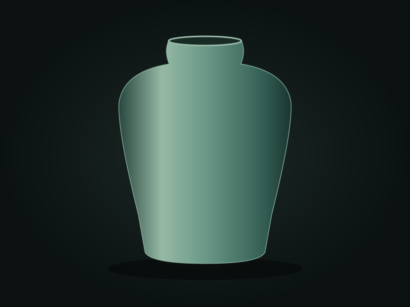

第叁章 · 一釉 · 浙江 · 龙泉
龙泉青瓷
把一场雨，烧进一只瓶。
泥土在掌心成形，又在窑火里等待。青，从来不是一种颜色，而是火与时间的答案。
龙泉青瓷以当地瓷土、紫金土等为原料，通过制坯、施釉与烧成获得温润的青色釉面。龙泉青瓷传统烧制技艺于 2009 年列入联合国教科文组织人类非物质文化遗产代表作名录。
技艺档案
- 地域
- 浙江 · 龙泉
- 材料
- 瓷土 · 釉
- 代表器物
- 梅瓶、玉壶春瓶与青瓷碗
从材料，到手艺
工序经归纳，供入门理解每一步，都有分寸。
- 01
练泥
淘洗与陈腐后的泥料，需要反复揉练。
- 02
拉坯
在旋转中控制双手，让器物轮廓成形。
- 03
修坯
待坯体干湿适宜，修整器足与壁厚。
- 04
施釉
让釉浆均匀附着，为烧成保留余地。
- 05
入窑
装匣与装窑，关注火路和器物间距。
- 06
烧成
在温度、气氛与冷却的共同作用下成色。
让手，比目光再近一点
互动体验守一窑青色

粉青读懂匠人的语言
技艺小辞典
每一个词，都是理解的开始。
粉青
柔和淡雅、似玉的青釉色调。
梅子青
较深而饱满的青绿色釉调。
开片
釉与胎的膨胀差异可能形成细密裂纹；并非所有青瓷都有开片。
还原气氛
影响含铁釉呈色的一种窑内气氛条件。
资料依据：中国非物质文化遗产网 · 龙泉青瓷传统烧制技艺 ↗。内容为归纳改写，非采访原话。
认识徐朝兴 ↗